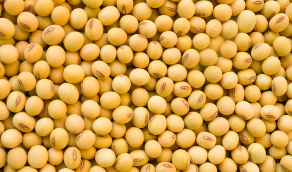
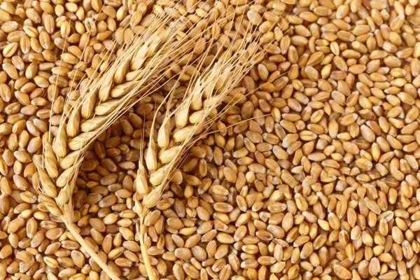
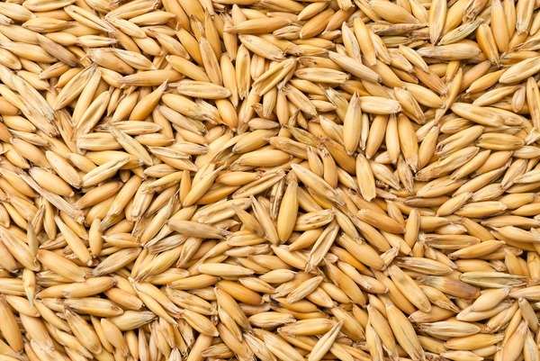

Great quality product, without GMO
-
Rich in proteins
We constantly monitor the fertility of the soil, so our soybeans are rich in nutrients and minerals
-
Fast shipping
We make sure you recieve your order as fast as possible, we also have scales to control each kologramm
-
Quality Assurance
For every purchase you make, we will ensure that all soybeans are sorted and dried for long-term storage
Our history
We grow soy scince 2001, when we desided to buy our first tractor Belarus MTZ-80. But it wasn't enough to seed this culture. So, we borrowed some implementation from Kolchoz, named after Lenin - soviet legacy. Then we seeded our first 10Ga of land
In the fall of 2001 we asked Kolhoz to gather our first crop. We payed them some part of gathered harvist and sold another part. With the proceeds we bougth missing equipment and by folowing year did everything on our own.
Then we started to buy land around our village. Meanwhile the Kolchoz gained too much debts and went bunkrupt. But our business boomed. During this 22 years was also many difficulties. For example - the drought in 2012, when our pruductivity of land was less than 800 Kg per 10000 square meters. Or the flood in 2013. These two were the most hard years. But we overcame all the issues and in 2022 we've reached record productivity for our region - 2500 Kg per 10000 square meters. In addition we also grow some other cultures, like wheat and oats.
-
Soy beans
$600 per ton
 -
Wheat
125$ per ton
 -
Oats
100$ per ton
